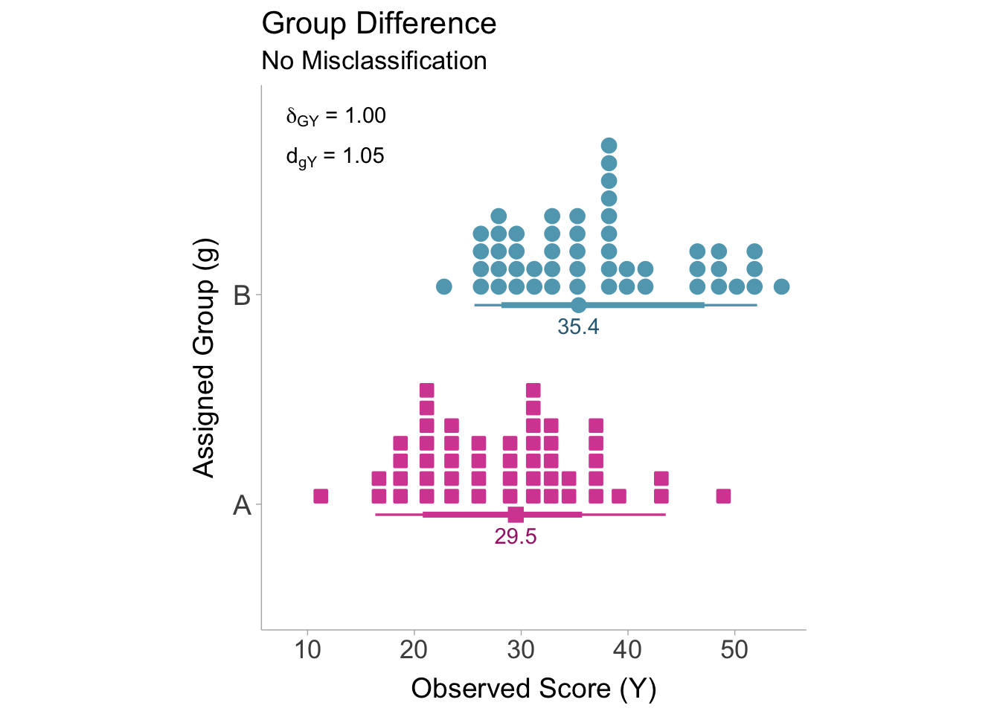

chi2 <- 54.5
n <- 100
# calculate reliability from chi squared statistic
rgg <- sqrt(chi2/n)
# print reliability
rgg[1] 0.7382412Group misclassification describes a situation where true group membership (e.g., people with a disorder) does not perfectly match the observed group membership (e.g., people diagnosed with a disorder). Group misclassification can be considered a type of measurement error where instead of accounting for errors in continuous variables (i.e., unreliability), group misclassification accounts for errors in categorical variables.
Misclassification can be defined as any deviations between true group membership and observed group membership. Let us imagine two groups, group \(A\) and group \(B\). In order to identify members of group \(A\) and group \(B\), we have to use some measurement procedure. We can also suppose that this measurement instrument produces imperfect group assignments, that is, people who are actually in group \(A\) are sometimes assigned group \(B\) and vice versa. We can visualize the performance of the classification procedure with a contingency table (see Table 6.1) between actual group membership (\(G\)) and observed group membership (\(g\)):
| \(\boldsymbol{G=A}\) | \(\boldsymbol{G=B}\) | |
| \(\boldsymbol{g=A}\) | \(n_{AA}\) | \(n{BA}\) |
| \(\boldsymbol{g=B}\) | \(n_{AB}\) | \(n_{BB}\) |
We can see from the contingency table that individual’s who were correctly classified, would be labeled in the cell block \(AA\) or \(BB\) and those who were misclassified would belong to cells \(BA\) and \(AB\). Therefore we can define the proportion of individuals that are accurately classified as \(p_{\text{acc}} = \frac{n_{AA} + n_{BB}}{n_{AA} + n_{BB} + n_{AB} + n_{BA}}\) whereas the proportion of people misclassified can be defined as \(p_{\text{mis}} = \frac{n_{AB} + n_{BA}}{n_{AA} + n_{BB} + n_{AB} + n_{BA}}\). A high-quality classifier would would minimize \(p_{\text{mis}}\) and maximize \(p_{\text{acc}}\). Note that the proportion of people misclassified is inversely proportional to the proportion of people accurately classified such that, \(p_{\text{mis}} = 1-p_{\text{acc}}\).
Similar to quantifying reliability in continuous variables by calculating the correlation in parallel sets of observed scores, the same can be done in categorical variables. Instead of a contingency table between observed (\(g\)) and true (\(G\)) group membership, we will instead create a contingency table of two measurements producing two sets of observed group assignments (\(g\) and \(g'\)). Measurements often will take the form of inter-rater assessments, for example, two clinician’s diagnosis of Major Depressive Disorder (MDD) in the same sample of patients.
| \(\boldsymbol{g=A}\) | \(\boldsymbol{g=B}\) | |
| \(\boldsymbol{g'=A}\) | \(n_{AA}\) | \(n_{BA}\) |
| \(\boldsymbol{g'=B}\) | \(n_{AB}\) | \(n_{BB}\) |
To obtain the reliability of the group assignments, we can calculate the correlation coefficient between \(g\) and \(g'\). Since both variables are categorical, a Pearson correlation coefficient would be equivalent to a phi coefficient. The phi coefficient is often referred to as Matthew’s correlation coefficient and is most frequently used as an index of performance of a binary classifier in machine learning. Let’s denote the reliability (i.e., the correlation between \(g\) and \(g'\)) as \(\rho_{gg'}\). Remember that reliability from the chapter on unreliability can be defined as the square of the correlation between true scores and observed scores. As is the case here, we can define classification reliability as the square of the correlation between assigned group membership and actual group membership,
\[ \rho_{gg'} = \rho^2_{gG} \]
There are a few ways to obtain a sample estimate of \(\rho_{gg'}\) (\(r_{gg'}\)). The first way is to calculate the sample estimate directly from a contingency table,
\[ r_{gg'} = \frac{n_{AA}n_{BB}-n_{AB}n_{BA}}{\sqrt{(n_{AA}+n_{BA})(n_{AB}+n_{BB})(n_{AA}+n_{AB})(n_{BA}+n_{BB})}}. \]
Where \(n_{AA}\), \(n_{BB}\), \(n_{AB}\), and \(n_{BA}\) are the number of subjects within their respective cells of the contingency table. If the values of the contingency table are not available, we can calculate the reliability from the \(\chi^2\)-statistic,
\[ r_{gg'} = \sqrt{\frac{\chi^2}{n}}. \]
Where \(n\) is the total sample size (sum of all cells). If the \(\chi^2\)-statistic is unavailable, we can approximate the reliability from the accuracy (\(p_{\text{acc}}\)) or the proportion of people misclassified (\(p_{\text{mis}}\)),
\[ r_{gg'} = (2p_{\text{acc}}-1)^2 = (1-2p_{\text{mis}})^2. \]
This approximation assumes that the group sizes are approximately equal and the misclassification rates are approximately equal between groups. Otherwise, \(r_{gg'}\) will be overestimated (Wiernik and Dahlke 2020).
Our quantity of interest is the true score population standardized mean difference, \(\delta_{GU}\), between actual members of group \(A\) and group \(B\) on the true scores of the dependent variable, \(U\). However, the observed sample standardized mean difference (\(d_{gY}\)) is estimating the difference in observed scores between individuals who are assigned group to \(A\) and group \(B\). Non-differential error in the assignment of groups (i.e., group misclassification) will bias the observed correlation. We can model the observed standardized mean difference as a function of the target quantity, \(\delta_{GU}\),
\[ d_{gY} = a\delta_{GU} + e. \]
Where \(a\) is the artifact attenuation factor and \(e\) denotes the sampling error. Therefore an unbiased estimate of the target standardized mean difference can be obtained by dividing the observed standardized mean difference by an estimate of the artifact attenuation factor,
\[ d_{GU} = \frac{d_{gY}}{\hat{a}}. \]
The standardized mean differences will become biased when subject’s assigned groups differ from their actual group. This is partially due to the fact that the means of each group are driven closer to one another. Let us suppose that, on average, group \(A\) and group \(B\) score differently on some outcome, \(Y\). When some subjects are erroneously assigned to the incorrect group, the observed mean within each group will reflect a weighted average true means of both groups. This is due to the fact that the misclassified individuals are being drawn from a population with a different mean. To calculate the mean of the observed groups we must incorporate the true mean of the correctly classified subjects and the misclassified subjects,
\[ \overline{Y}^\text{obs}_A = \left(\frac{n_{AA}}{n_{AA}+n_{BA}}\right)\overline{Y}^\text{true}_A + \left(\frac{n_{BA}}{n_{AA}+n_{BA}}\right)\overline{Y}^\text{true}_B \]
\[ \overline{Y}^\text{obs}_A = \left(\frac{n_{BB}}{n_{BB}+n_{AB}}\right)\overline{Y}^\text{true}_B + \left(\frac{n_{AB}}{n_{BB}+n_{AB}}\right)\overline{Y}^\text{true}_A. \]
From the above equations, it becomes evident that as the number of misclassified individuals increases (\(n_{AB}\) and \(n_{BA}\)), the observed means of each group gradually converge towards each other. As the means converge, the standardized mean difference will correspondingly shift toward zero. To illustrate this phenomenon, Figure 6.1 shows the distributions for groups \(A\) and \(B\) without any misclassification. In this case, there is no attenuation of the standardized mean difference.

If some individuals are assigned to the incorrect group, then we will see attenuation in the standardized mean difference as the means converge. Figure 6.2 is showing what happens when the group misclassification rate is 10%. A group misclassification rate of 10% is equivalent to a classification reliability of \(r_{gg'}=.64\).

It is important to note that for many of the corrections converting the standardized mean difference to a point-biserial correlation is often a necessary step. However, once the corrected point-biserial correlation is obtained, the correlation can then be converted back into a standardized mean difference. To correct for bias induced by misclassification we first need to convert the observed standardized mean difference to a point-biserial correlation coefficient by using the observed proportion of the sample that has been assigned to either group \(A\) or group \(B\) (\(p_g\)). The group proportion \(p_g\) in the following equations will only show up in the term \(p_g(1-p_g)\) so it will not matter which group is used to calculate the proportion. Converting \(d_{gY}\) to \(r_{gY}\):
\[ r_{gY} = \frac{d_{gY}}{\sqrt{\frac{1}{p_g(1-p_g)}-d_{gY}^2}}. \]
We can then correct the point-biserial correlation for group misclassification by dividing by the square root of the classification reliability. Since we also want to correct for measurement error in the continuous dependent variable, \(Y\), we can simultaneously apply the correction for unreliability:
\[ r_{GU} = \frac{r_{gY}}{\sqrt{r_{gg'}}\sqrt{r_{YY'}}}. \]
Now we can convert the corrected point-biserial correlation into a corrected standardized mean difference (\(d_{GU}\)). When converting back to a standardized mean difference, we need to use the true group proportions, \(p_G\). Although if we are to assume equal misclassification rates between groups, then the observed proportion can be used \(p_g\):
\[ d_{GU} = \frac{r_{GU}}{\sqrt{p_G\left(1-p_G\right)\left(1-r_{GU}^2\right)}}. \]
This process of converting, correcting, and then back-converting must also be done for the standard error. To avoid redundancy, we can incorporate each step into a single equation:
\[ \small{se(d_{GU}) = \frac {se(d_{gY})\times r_{GU}} {r_{gY}\sqrt{\left(1+d_{gY}^2p[1-p]\right)^2\left(d_{gY}^2+\frac{1}{p_g(1-p_g)}\right)p_G(1-p_G)(1-r_{GU}^2)^3}}.} \]